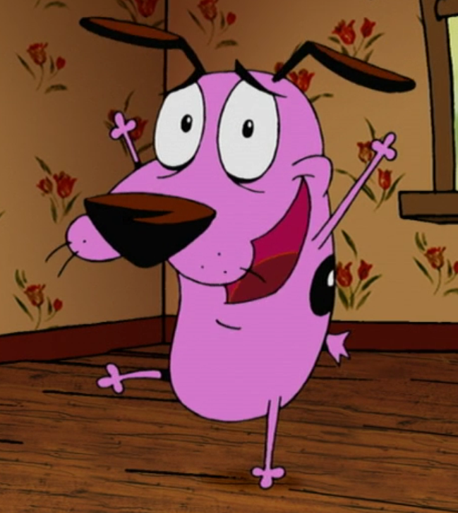
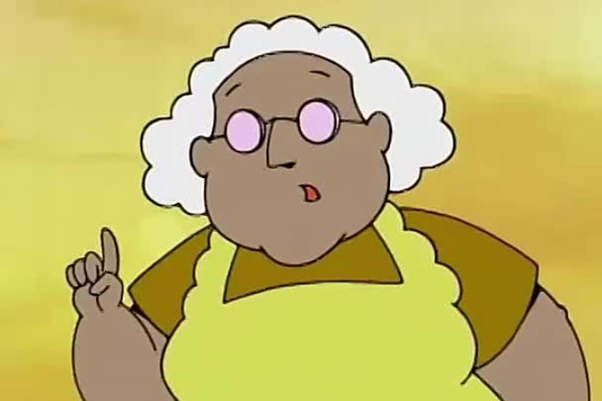
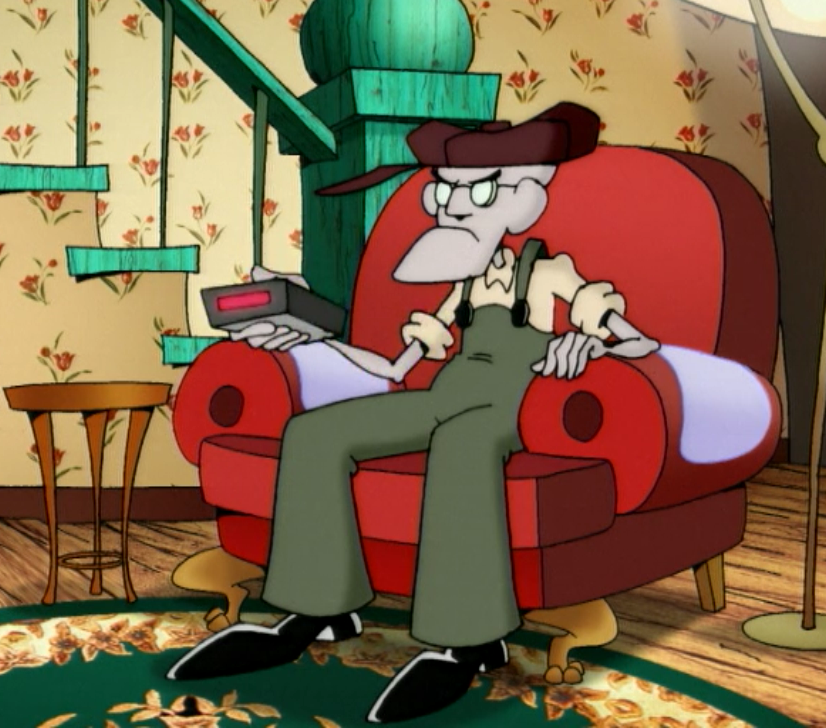
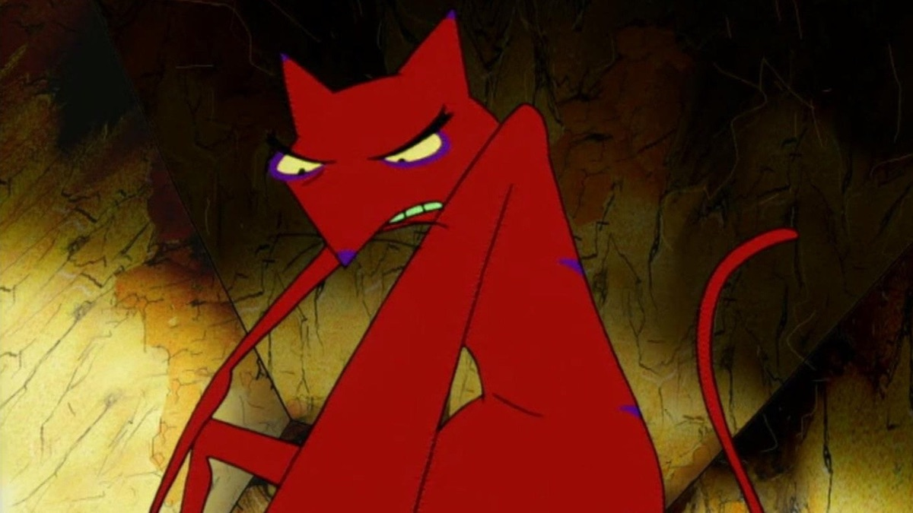
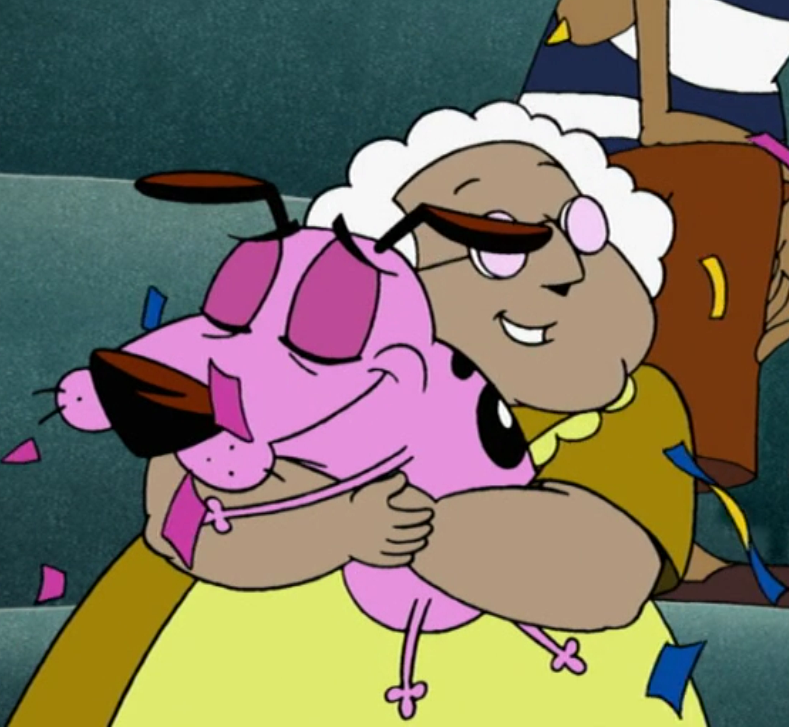
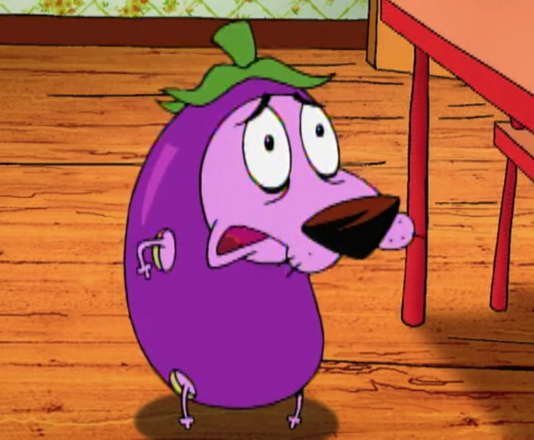
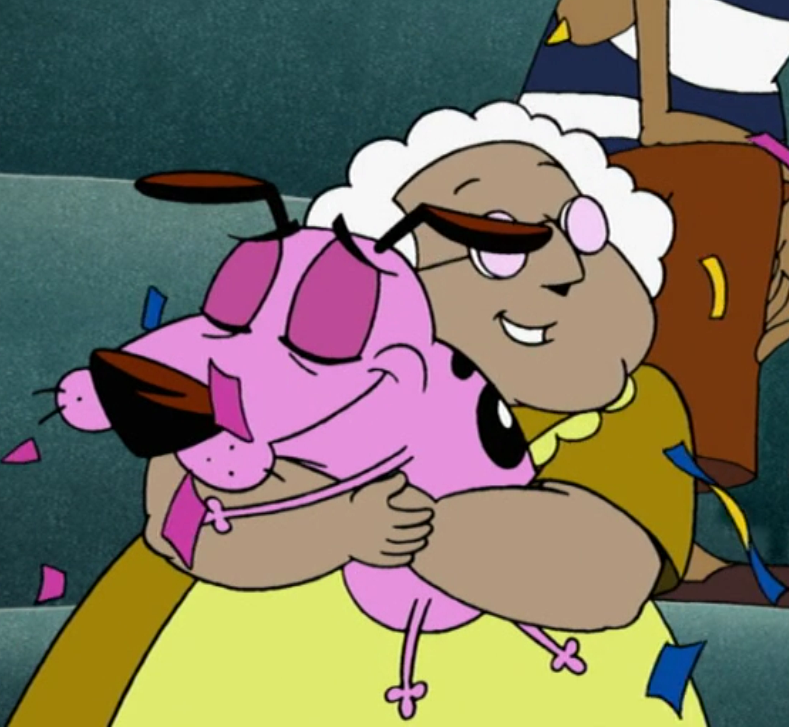
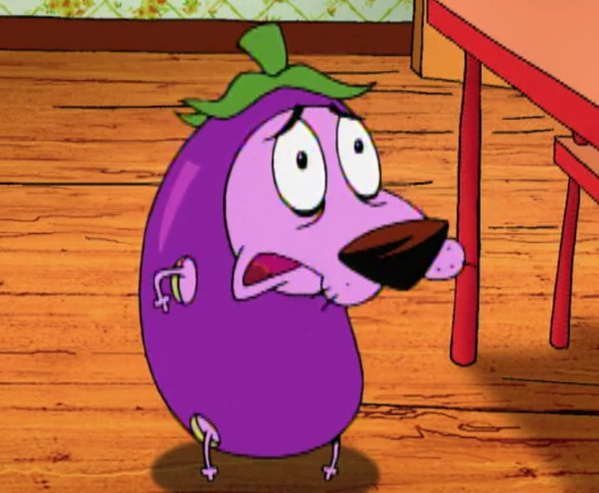
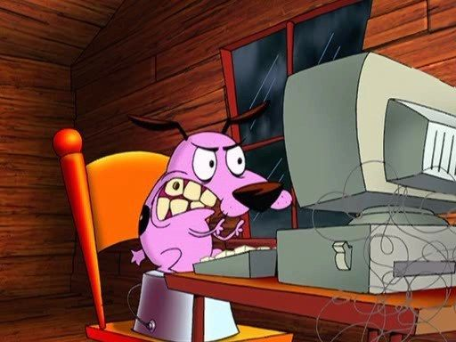
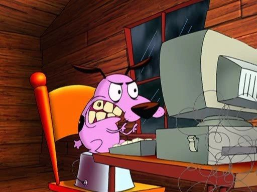

Coraje, el perro cobarde es una caricatura donde cuenta la historia de un perro llamado Coraje y sus dueños: Muriel, una vieja mujer escocesa, y Justo, un viejo agricultor gruñón.
Este perro vive para salvarles la vida de tenebrosos monstruos, extraterrestres y otras criaturas míticas.
PERSONAJES
CORAJE

Coraje es un perro rosado que fue encontrado por Muriel Bolsa después de escapar de la clínica veterinaria en la ciudad de Ningún Lugar.
Coraje, como sugiere el título del programa, es un perro extremadamente cobarde y angustiado, que se asusta fácilmente por casi cualquier cosa. A pesar de esto, cuando sus dueños o amigos se enfrentan al peligro, no se detendrá ante nada para salvarlos, convirtiéndolo fácilmente en el personaje más valiente y moralmente alineado de toda la serie.
Aunque está dispuesto a arriesgar su propia vida para proteger a Muriel a toda costa, su irracionalidad a veces hace que otros duden de su intuición. Coraje se ha presentado como un personaje casi completamente desinteresado, que trabaja para beneficiar a otros con poca o ninguna consideración por su propio bienestar, arriesgando su propia vida docenas de veces simplemente para garantizar la seguridad de su dueña.
Aunque su dueño Justo, es cruel con él, no se ofende con sus palabras duras y sus bromas crueles, especialmente en comparación con Muriel. Lo más probable es que esto se deba a que ha aprendido a lidiar con las bromas y el mal genio del hombre celoso con el tiempo. A pesar de esto, se ha demostrado que Coraje también se preocupa por la seguridad de Justo (aunque no tanto como la de Muriel) y hará todo lo posible para protegerlo del peligro (aunque no tiene tanto éxito en protegerlo como lo es con Muriel). En algunas ocasiones, Coraje se unía a Justo en un intento por salvar a Muriel del peligro.
Coraje es algo infantil en su tiempo libre, ya que ha expresado interés y le gusta jugar con juguetes y construir castillos de arena, así como otras actividades infantiles o parecidas a perros (como enterrar o desenterrar cosas).
MURIEL

Muriel, una anciana muy amable y dulce dueña de Coraje, así como la estimada esposa de Justo Bolsa. Aunque ella es la damisela en apuros del programa, Muriel también es una excelente cocinera y no toleraría ninguna tontería o mala conducta, siempre usa su rodillo para golpear a Justo cada vez que asusta, se burla, abusa o maltrata de otra manera a Coraje.
Debido a su bondad y naturaleza dulce e ingenua, Muriel es un objetivo fácil y a menudo atractiva para los villanos. No ayuda que ella también sea siempre amable con los extraños, e incluso los invita a su casa, sin ver cuáles eran sus verdaderas intenciones hasta que ellos mismos lo revelan. Afortunadamente, ella siempre tiene Coraje para salvar el día.
JUSTO

Justo es un granjero que vive en medio de Ningún Lugar con su esposa Muriel Bolsa y su perro Coraje. Por lo general, es antagonista de la serie, pero también ha tenido que aliarse con frecuencia o ser rescatado por Coraje.
Justo es un anciano muy ruin y fastidioso que suele estar enfadado y frustrado por el mundo que le rodea. Justo suele ser muy avaro cuando hay una oportunidad de tener mucho dinero. En casi todos los episodios, se lo ve sentado en su silla roja favorita mientras lee una copia del periódico de Ningún Lugar y posiblemente mirando la televisión.
Tiene un masivo odio por Coraje y con frecuencia lo llama "perro estúpido", y se complace en asustarlo y maltratarlo siempre que sea posible, lo que en gran parte se debe a los celos de que Muriel constantemente le da cariños y adora a Coraje; sin embargo, no es raro que Justo asuste o se meta con Coraje solo por diversión o para que Coraje no lo molesté
ANTOGONISTAS
LE QUACK
Le Quack (francés para "The Quack") es un pato estafador francés que siempre trata de ganar una fortuna.
Le Quack es hábil y decisivo. Sus tendencias manipuladoras son especialmente dañinas cuando se combinan con su intelecto tortuoso en la persuasión psicológica. Como la mayoría de los antagonistas de la serie, es mucho más fuerte de lo que parece. Como estafador, tiene muchas caras, con una lujuria insuperable por ganancias monetarias. Para conseguir lo que quiere, utilizará a quien quiera y someterá al resto a sus perturbadores y poco ortodoxos métodos de tortura. Su contención es de corta duración, ya que es capaz de liberarse de cualquier prisión y dejarla en los desechos detrás de él.
Las hazañas de Le Quack con Coraje comenzaron cuando fue contratado como especialista para curar la amnesia de Muriel. Sin que el perro lo supiera, el 'profesional' que contrató era en realidad un hábil ladrón y solo buscaba robarles.
KATZ

Katz es el principal antagonista de la serie Coraje el Perro Cobarde y uno de los principales antagonistas. Katz es un gato rojo delgado, antropomorfo, cuya primera aparición fue en el episodio "Una noche en el Motel Katz", es conocido por sus travesuras malévolas e inmorales.
Katz es un felino suave, y viene completo con su propio tema de fondo siniestro. Como la mayoría de los gatos, tiene una poderosa aversión a los perros. Desde su debut, la principal prioridad de Katz siempre ha sido lograr sus objetivos sin importar el costo.
ZORRO CAJUN
El Zorro Cajún es un zorro naranja con unos ojos gigantes y saltones pero siempre usa un par de gafas de sol. A pesar de aparecer en solo dos episodios, se le considera uno de los rivales emblemáticos de Coraje.
Zorro Cajún generalmente tiene una personalidad relajada, aunque a veces se vuelve loco cuando sus metas están en peligro. Él cree que "nació afortunado" y, como tal, puede ser muy competitivo para convertirse en el número uno. Por muy brutales que sean sus ofensas, trata a sus rivales con una amabilidad inusual y se muestra genuinamente educado y afable. Por alguna razón, sabe conducir un aplanadora y pilotar un avión.
TEMPORADAS
Coraje el perro cobarde llego a tener 4 temporadas cada una de 13 capitulos.
UNA NOCEH EN EL HOTEL DE KATZ
Este es el primer capitulo de Coraje donde el y sus dueños están regresando a casa después de unas vacaciones, y se detienen en un motel solitario antes de realizar la última etapa de su viaje. Justo y Muriel consiguen una habitación para pasar la noche en el hotel de Katz. Debido a la política "No se admiten perros", Coraje se ve obligado a estar afuera en el porche.
Resulta que Katz dirige el hotel para suministrar comida para su colección de grandes arañas devoradoras de hombres. Envía una para deshacerse de Coraje, mientras captura a Justo y mete a escondidas otra araña en el baño de Muriel. Después de escapar de la araña enviada por él, Coraje entra para salvar a la pareja de ancianos de ser la cena de las arañas. Katz frustra sus intentos y lo desafía a un dinámico juego de bádminton.
Mientras Coraje se agota, Katz juega casi sin esfuerzo (incluso leyendo un libro sobre arañas y disfrutando de una taza de té). Aunque Coraje pierde y Katz lo detiene, listo para matarlo, Muriel lo deja inconsciente con una raqueta.
LA HISTORIA DE CORAJE
Este es el ultimo capitulo de toda la serie de Coraje donde Coraje mira una lista de perros que han desaparecido recientemente, empieza a recordar como sus padres fueron enviados al espacio exterior por un malvado veterinario. Muriel, preocupada porque Coraje está traumado, decide llevarlo, en compañía de Justo, al mismo veterinario para ver si él puede decirles lo que le pasa. Sin embargo, el veterinario tiene previsto enviar a Muriel y a Justo al espacio exterior.
Decidido a no perder a sus dueños, igual que perdió a sus padres, Coraje se dirige al tablero de control y abre la puerta del cohete para que Justo y Muriel salgan y, luego de una larga persecución, el veterinario cae dentro del cohete que lo lleva directamente al mismo planeta donde se encuentran los padres de Coraje y los demás perros, los cuales al verlo, lo atacan sin compasión alguna.
En este episodio se revela que coraje tenía padres pero fueron enviados aun planeta por un malvado veterinario, también se revela como muriel encontró a coraje y la forma en que se originó su vida actual.
Este fue el último episodio de Coraje El perro cobarde, dejando un mensaje que "NADIE ES PERFECTO Y NO EXISTE LA PERFECCION".
PELICULA
s
SCOOBY-DOO CONOCE A CORAJE
Es una película crossover con los personajes de la serie animada Coraje, el perro cobarde. Se estrenó el 14 de septiembre de 2021
La comedia empieza cuando Scooby-Doo, el perro detective favorito, se une por primera vez a Coraje, el perro cobarde. La dupla canina huele algo extraño en el medio de Ningún Lugar, Kansas, hogar de Coraje y sus dueños, Justo y Muriel.
Enseguida este misterioso descubrimiento los lleva al encuentro de una cigarra monstruosa gigante y su extraño ejército de bichos voladores.
Fred, Vilma, Dafne y Shaggy saben bien que un matamoscas no bastará, y necesitarán la ayuda del dúo perruno para resolver el misterio. Scooby y Coraje tendran que vencer sus miedos y derrotar al ejército de insectos antes de que infeste al mundo.


.jpg) 



 
